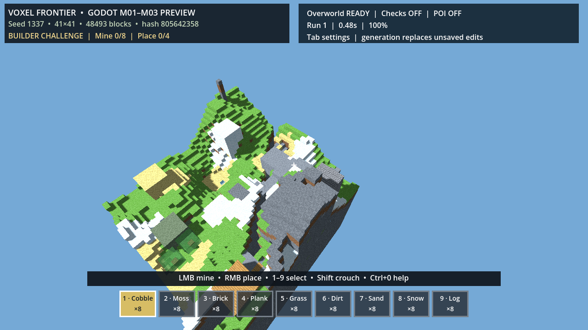

현재 구현
- 6축 기후, 최종 높이맵, 자연 공동·협곡·광맥·샘
- 랜드마크 접근로, 보호 중앙 방과 네 갈래 동굴망
- 128시드·기후 99·랜드마크 그래프 118·동굴 데이터 1,021개
게임 플레이 증거

고지·설원·평원과 랜드마크 접근 경로를 포함한 실제 월드 캡처.
다음 게이트
M03.2 지형–생물군 시트, M03.3 지하 5유형 이동, M03.4 구조물 계약, M03.5 128시드 매트릭스가 남았습니다. 통과 전 다양성 우위를 선언하지 않습니다.